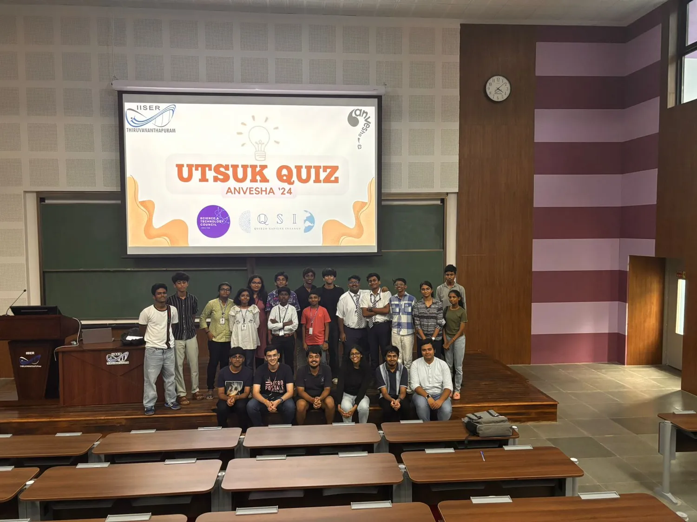
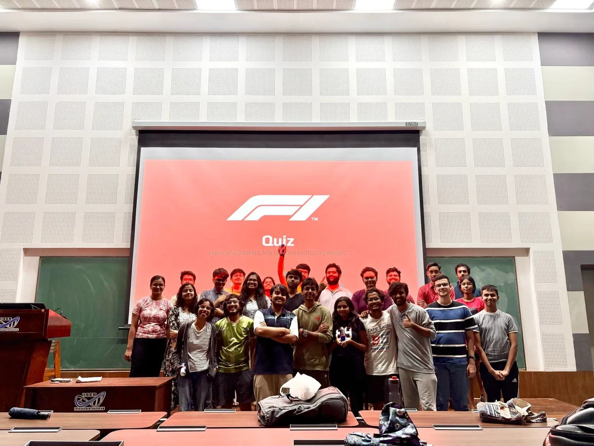
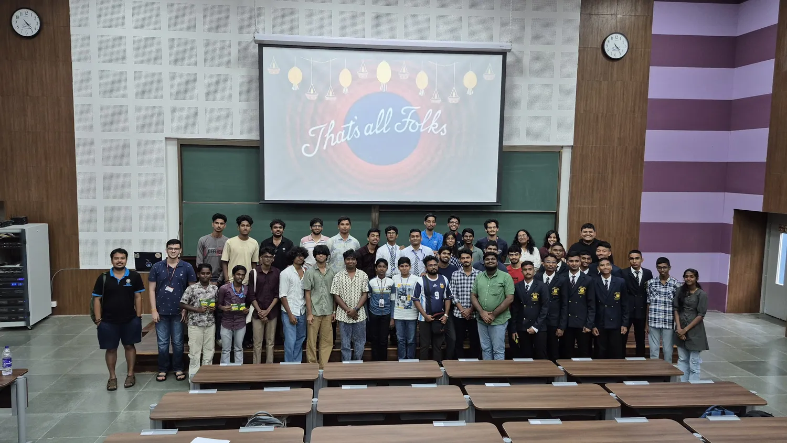
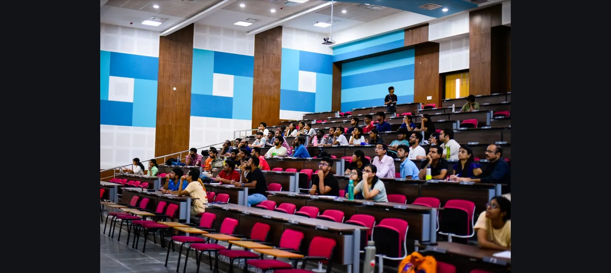
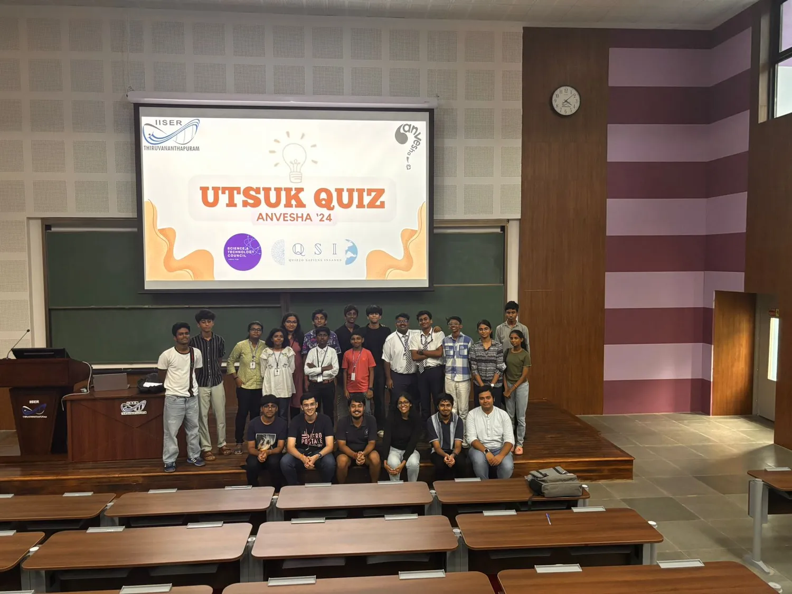
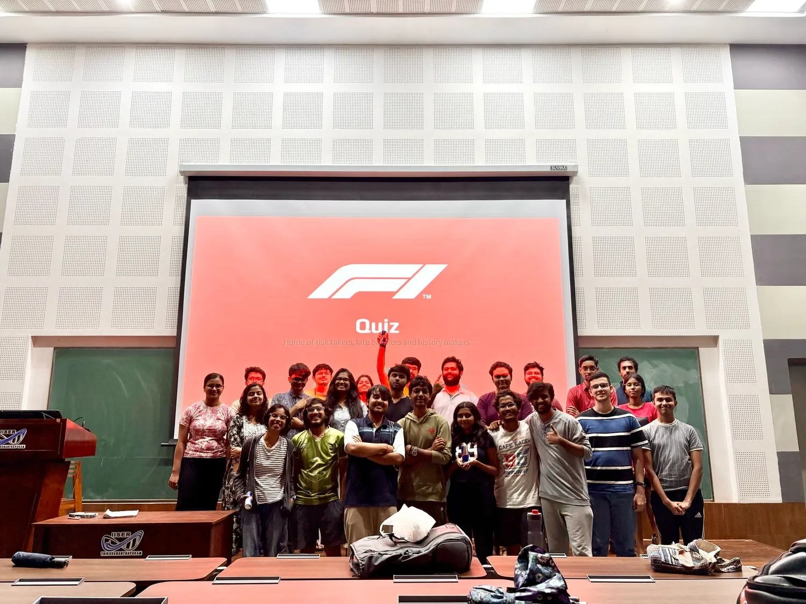
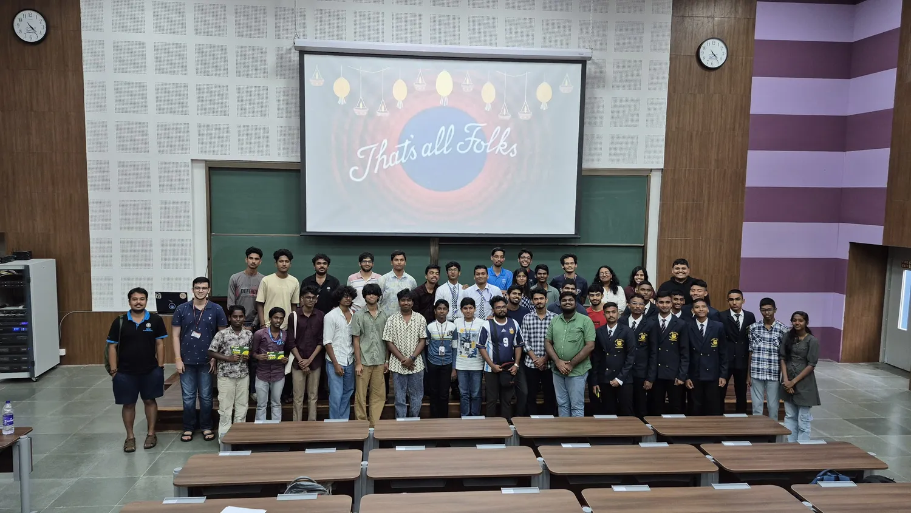
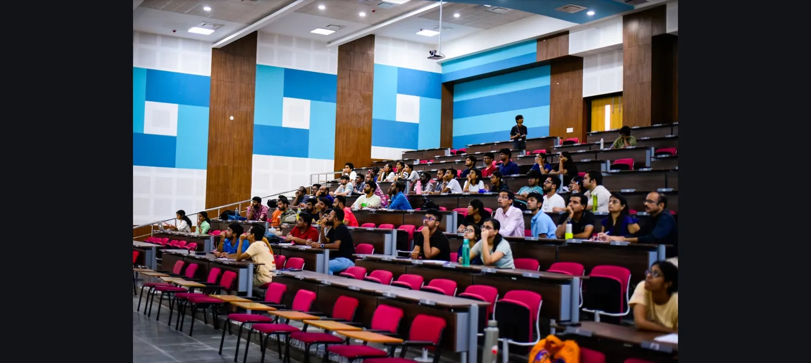

About Us
The Quizzing Society of IISER Thiruvananthapuram has been actively engaging the quizzing community for the past 11 years, organizing quizzes for both IISER students and participants from outside the institute. We have had the privilege of hosting renowned quizmasters, including Major Chandrakanth Nair, who have conducted quizzes on our campus. Over the years, the club has established itself as a well-recognized name among avid quizzers. QSI is dedicated to fostering an enthusiastic quizzing atmosphere on campus. The club organizes inter-school and inter-college quizzes, in addition to the numerous informal and themed quizzes that happen within the club regularly throughout the semester. Past and present members stay connected through a WhatsApp group, where they regularly pose questions and quiz each other, keeping the spirit of quizzing alive.
Events & Activities
- Inter-School and Inter-College Quizzes
- Informal and Themed Quizzes
- Sessions by Renowned Quizmasters
Gallery
 







Get in Touch
Follow us on our social media channels to stay updated!